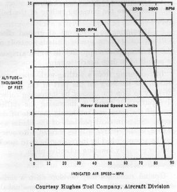
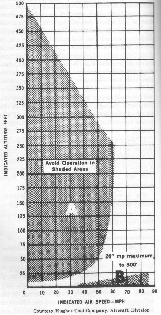

A tendency for the retreating blade to stall in forward flight is inherent in all present-day helicopters, and is a major factor in limiting their forward airspeed. Basically, the stall of the wing limits the low airspeed capabilities of the airplane. The stall of a rotor blade limits the high airspeed potential of a helicopter. The airflow over the retreating blade of the helicopter slows down as forward airspeed of the helicopter increases; the airflow over the advancing blade speeds up as forward airspeed increases. The retreating blade must, however, produce the same amount of lift as the advancing blade. Therefore, as the airflow over the retreating blade decreases with forward airspeed, the blade angle of attack must be increased to help equalize lift throughout the rotor disc area. As this increase in angle of attack is continued, the retreating blade will stall at some high forward airspeed. The advancing blade has relatively low angles of attack and is not subject to blade stall. Blade stall occurs during powered flight at the tip of the retreating blade, spreading inboard as forward airspeed increases. Retreating blade stall does not occur in normal autorotations.
When operating at high forward airspeeds, stalls are more likely to occur under conditions of:
1-High gross weight.
2-Low RPM.
3-High density altitude.
4-Steep or abrupt turns.
5-Turbulent air.
The major warnings of approaching retreating blade stall conditions in the order in which they will generally be experienced are:
1-Abnormal 2 per revolution vibration in two-bladed rotors or 3 per revolution vibration in three-bladed rotors.
2-Pitchup of the nose.
3-Tendency for the helicopter to roll.
At the onset of blade stall vibration, the pilot should take the following corrective measures:
1-Reduce collective pitch.
2-Increase rotor RPM.
3-Reduce forward airspeed.
4-Minimize maneuvering.
When operating under flight conditions likely to
produce blade stall, a helicopter may quickly advance into severe blade
stall by a steep turn, pullup, or other abrupt maneuver. The stall reaction
will be rapid and violent. The vibrations, pitchup, and roll tendencies of
the helicopter will present a serious threat to helicopter control and
structural limitations. When flight conditions are such that blade
stall is likely, caution should be exercised when maneuvering.
As the altitude increases, the never-exceed airspeed (red line) for most
helicopters decreases. Figure 65 shows a
chart from the helicopter flight manual for one model from which the Vne (never exceed) speed can be determined for the various
altitudes. At sea level, Vne is 86 miles per hour; at
6,000 feet and 2500 RPM, it is 65 MPH; and at 6,000 feet and 2700-2900 RPM,
it is 78 MPH. This chart immediately points up the effect that rotor RPM has
on the airspeed at which retreating blade stall is experienced.

Figure 65.- Chart showing never-exceed (Vne
) speed limits.
This condition of flight is sometimes described as settling in your own downwash. It involves high vertical rates of descent, and the addition of more power produces an even greater rate of descent. The helicopter is descending in turbulent air that has just been accelerated downward by the rotor. Reaction of this air on rotor blades at high angles of attack stalls the blades at the hub (center of the rotor) and the stall progresses outward along the blade as the rate of descent increases. The following combination of conditions are likely to cause settling with power:
1-A vertical or nearly vertical descent of at least 300 feet per minute. Actual critical rate depends on the gross weight, RPM, density altitude, and other pertinent factors.
2-The rotor system must be using some of the available engine power (from 20 to 100 percent).
3-The horizontal velocity must be no greater than approximately 10 miles per hour.
A pilot may experience settling with power accidentally. Situations that are conducive to a settling-with-power conditions are:
1-Attempting to hover out of ground effect at altitudes above the hovering ceiling of the helicopter;
2-Attempting to hover out of ground effect without maintaining precise altitude control; or
3-A steep power approach in which airspeed is permitted to drop nearly to zero.
In recovering from a settling-with-power condition, the tendency on the part of the pilot to first try to stop the descent by increasing collective pitch will result in increasing the stalled area of the rotor and increasing the rate of descent. Since inboard portions of the blades are stalled, cyclic control will be reduced. Recovery can be accomplished by increasing forward speed, and/or partially lowering collective pitch.
Ground resonance may develop when a series of shocks
cause the rotor head to become unbalanced. This condition, if allowed to
progress, can be extremely dangerous and usually results in structural
failure. In general, if ground resonance occurs, it will occur only in
helicopters possessing three-bladed, fully articulated rotor systems and
landing wheels. The rotor blades in a three-bladed helicopter are equally
spaced around the rotor hub (120° apart), but are constructed to allow
some horizontal movement. This horizontal movement is called lead and
lag (drag), and the vertical hinge that makes this possible is the drag
hinge.
As the name implies, ground resonance occurs when the
helicopter makes contact with the surface during landing or while in contact
with the surface during an attempted takeoff. When one landing gear of the
helicopter strikes the surface first, a shock is transmitted through the
fuselage to the rotor. This shock may cause the blades straddling the
contact point to be forced closer together. The spacing might then be
122°, 122°, and 116°. When one of the other landing
gears strikes, the unbalance could be aggravated and become even greater.
This establishes a resonance which sets up a pendulum like oscillation
of the fuselage-a severe wobbling or shaking similar to the oscillations
of a silver dollar, or similar object, when dropped striking the floor
at an angle. Unless immediate corrective action is taken, the oscillation
will increase rapidly and destruction of the helicopter will result.
Corrective action could be an immediate takeoff if RPM is in proper
range, or an immediate closing of the throttle and placing the blades in
low pitch if RPM is low.
Abnormal vibrations in the helicopter will generally fall into three ranges:
1-Low frequency-100 to 400 cycles per minute (cpm).
2-Medium frequency-1,000 to 2,000 cpm.
3-High frequency-2,000 cpm or higher.
Abnormal vibrations in this category are always
associated with the main rotor. The vibration will be some frequency related
to the rotor RPM and the number of blades of the rotor, such as one
vibration per revolution (1 per rev.), 2 per rev., or 3 per rev.
Low-frequency vibrations are slow enough that they can be counted.
The frequency and the strength of the vibration will
cause the pilot or passengers to be bounced or shaken noticeably. If the
vibration is felt through the cyclic stick, it will have the same definite
kick at the same point in the cycle. These low-frequency vibrations may be
felt only in the fuselage or only in the stick or they may be evident in
both at the same time. Whether the tremor is in the fuselage or stick will,
to some extent, determine the cause.
Those vibrations felt through the fuselage may be
classified in three ways-lateral, longitudinal, or vertical-or they may be
some combination of the three. A lateral vibration is one which throws the
pilot from side to side. A longitudinal vibration is one which throws the
pilot forward and backward, or in which the pilot receives a periodic kick
in the back. A vertical vibration is one in which the pilot is bounced up
and down, or it may be thought of as one in which the pilot receives a
periodic kick in the seat of the pants. Describing the vibrations to the
mechanic in this way will also allow a determination be made as to the cause.
If the vibration is felt definitely in both the stick
and fuselage, the cause is generally in the rotor or rotor support. A
failure of the pylon support at the fuselage is also a possible cause.
If the low-frequency vibration in the fuselage occurs
only during translational flight or during a climb at certain airspeeds, the
vibration may be a result of the blades striking the blade rest stops. This
can be eliminated by avoiding the flight condition that causes it.
For low-frequency vibrations felt predominantly
through the stick, the most likely place to look for trouble is in the
control system linkage from the stick to the rotor head.
Medium-frequency vibrations are a result of trouble with the tail rotor in most helicopters. Improper rigging, unbalance, defective blades, or bad bearings in the tail rotor are all sources of these vibrations. If the vibration occurs only during turns, the trouble may be caused by insufficient tail rotor flapping action. Medium frequency vibrations will be difficult if not impossible to count due to the fast rate.
High-frequency vibrations are associated with the engine in most helicopters, and will be impossible to count due to the high rate. However, they could be associated with the tail rotor RPM is approximately equal to or greater than the engine RPM. A defective clutch or missing or bent fan blades will cause vibrations which should be corrected. Any bearings in the engine or transmission or the tail rotor drive shaft that go bad will result in vibrations with frequency directly related to the speed of the engine.
Experience in detecting and isolating the three different classes of vibrations when they first develop makes it possible to correct the vibrations long before they become serious.
It is obvious that there are some transitions that are
necessary in establishing and stabilizing a helicopter in autorotative
flight following a power failure. A power failure immediately results in a
dissipation of rotor RPM while the airflow through the rotor system is
changing from the downward flow present in powered flight to the upward flow
occurring during autorotative flight. Rotor RPM decreases at a rapid rate if
immediate action is not taken to decrease the pitch angle of the rotor
blades. This decrease continues (even after the upward flow of air has
stabilized) to the point that controlled flight may not even be possible
depending upon the pitch angle at the time of power failure. After the pitch
angle is lessened and the upward flow of air stabilizes, the rate of descent
will not stabilize at its minimum until the rotor RPM builds back up to its
maximum for that particular pitch angle setting and helicopter gross weight.
The successful entry from powered flight to
autorotation consists of the following transitions:
1-Changing of airflow from a downward flow to an upward flow
2-Lowering collective pitch to maintain a tolerable angle of attack which would otherwise increase because of the descent.
3-Regaining rotor RPM and stabilizing rate of descent.
The magnitude of these transitions depends on the mode of flight.
If power failure occurs in a descent, there is very little transition. A
vertical climb requires large transitions because of the high rotor blade
pitch angle required for the vertical climb.
Altitude versus airspeed charts
Figure 66 is an
airspeed vs. altitude limitations chart excerpted from the helicopter flight
manual for one helicopter. This type of chart is often referred to as the
"height-velocity curve diagram" or "dead man's curve."
Such charts are prepared by the manufacturer and, as required by
regulations, are published in the helicopter flight manual generally under
the performance section.
A helicopter pilot must become familiar with this
chart for the particular helicopter being flown. From it, the determination
as to what altitudes and airspeeds are required to safely make an
autorotative landing in case of an engine failure; or. to restate it in
another way, the chart can be used to determine those altitude-airspeed
combinations from which it would be nearly impossible to successfully
complete an autorotative landing. The altitude-airspeed combinations that
should be avoided are represented by the shaded areas of the chart.
Imagine the difficulty of entering and establishing a
stabilized autorotation from the shaded areas of the "dead man's
curve" (fig. 66). This chart is
assuming the lack of vertical velocity and acceleration (that is, flight at
a constant altitude and airspeed) and that an engine failure in these areas
is complete and instantaneous. In either of these shaded areas, it would be
nearly impossible to complete all the transitions to autorotation before the
helicopter would be at ground level. When the helicopter is "pushed
over" (that is, when the nose is lowered) into a glide, the rotor
system angle of attack is diminished. This causes the helicopter to
accelerate downward and lengthens the time required to complete the
autorotational transitions. That is, the time required for the helicopter
airspeed, rotor RPM, and rate of descent to stabilize would be greater than
if the helicopter were already in the autorotative descending attitude with
best autorotational airspeed at the time of engine failure.

Figure 66.- Airspeed vs. altitude limitations chart.
Antitorque system failure could be the result of a failure in the tail rotor blades, a failure in the mechanical linkage between the pedals and the pitch-change mechanism of the tail rotor, or a failure in the tail rotor drive shaft between the transmission and the tail rotor.
Antitorque system failure in forward cruising flight
If the antitorque system fails in forward cruising
flight, the nose of the helicopter will usually pitch slightly and yaw to
the right. The direction in which the nose will pitch depends on the
particular helicopter and how it is loaded. Violence of pitching and yawing
is generally greater when the failure occurs in the tail rotor blades and
is usually accompanied by severe vibration.
The pitching and yawing can be overcome by holding the
cyclic stick near neutral and entering autorotation. Cyclic control
movements should be kept to a minimum until all pitching subsides. Avoid
abrupt rearward movements of the cyclic stick. If it is moved rearward
abruptly, the main rotor blades could flex downward with sufficient force to
strike the tail boom. If unsuitable terrain exists, cautiously add power to
determine if flight can be continued to an acceptable landing area. If
dangerous attitudes are incurred due to this addition of power, re-enter
autorotation.
If sufficient forward speed is maintained, the
fuselage remains fairly well streamlined; however, if descent is attempted
at slow speeds, a continuous turning movement to the left can be expected.
(Know the manufacturer's recommendations in case of tail rotor failure for
each particular helicopter you fly. This will generally be found under
Emergency Procedures in the helicopter flight manual.) Directional control
should be maintained primarily with cyclic control and, secondarily, by
gently applying throttle momentarily, with needles joined, to swing the nose
to the right.
A landing may be made with forward speed or by
flaring, The best and safest landing technique, terrain permitting, is to
land directly into the wind with approximately 20 miles per hour airspeed.
The helicopter will turn to the left during the flare and during the
subsequent vertical descent. An important factor to remember is that the
helicopter should be level or approximately level at ground contact.
Antitorque system failure while hovering
If the antitorque system fails during hovering flight,
quick action must be taken by the pilot. The turning motion to the right
builds up rapidly because of the torque reaction produced by the relatively
high-power setting. The throttle should be closed immediately (without
varying collective pitch position) to eliminate this turning effect.
Simultaneously, the cyclic stick should be used to stop all sideward or
rearward movements and to place the helicopter in the landing attitude prior
to touchdown. From this point, the procedure for a hovering autorotation
(Chapter 11) should be followed.
{kind=link}
{kind=link}